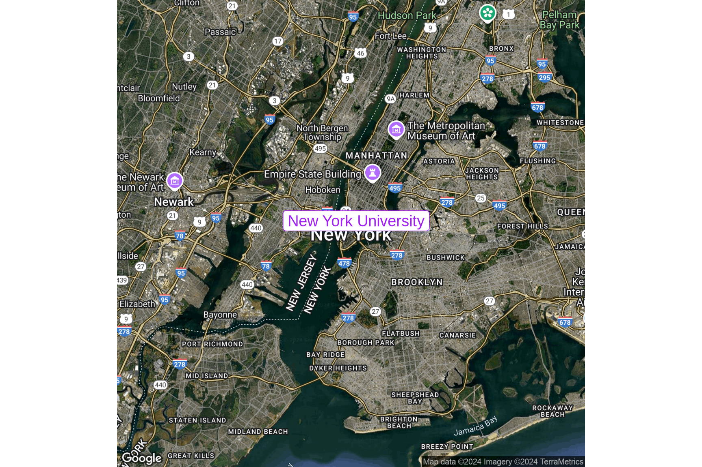

Code
library(tibble)
library(ggmap)We import tidyverse’s tibble and ggmap to create the maps. The former is a data manipulation library, while the latter is an extension of ggplot2 that allows us to create maps.
library(tibble)
library(ggmap)The data consists of a single point, namely, the location of New York Univerty. The dataset is a tibble with three columns, a label for NYU, see name, and lon and lat pair. As we know, tibble allows to initialize a dataset ‘visually’ by means of the tribble function.
unis = tribble(
~name, ~lon, ~lat,
"New York University", -73.9965, 40.7295
)The geospatial chart creating process is straightforward. We use ggmap’s get_map function to download the map of the area we are interested in. In this case, we are interested in the map of New York City. The function requires the following arguments:
center: the coordinates of the area we are interested in OR the name of an entity, e.g., “New York”zoom: the zoom levelsize: the size of the mapmaptype: the type of map we want to downloadIt is worh noticinging that ggmap can retrieve maps from Google Maps or Stadia. In both cases, you have to register your application to get an API key.1 The below code snippet uses Google Maps. In this case, the center of the can be a precise pair of coordinates or the name of the area we are interested in. The map type is set to hybrid, which is a mix of satellite and road maps.
ny_map <- get_googlemap(
#center = c(lon = -74.0060, lat = 40.7128),
center = "New York",
zoom = 11,
size = c(1200, 1200),
maptype = "hybrid",
source = "google"
)
ny_mapIt is possible to map the data using a typical ‘pipeline’ approach a’ la tidyverse.
get_googlemap(
center = c(lon = -74.0060, lat = 40.7128),
markers = unis[, c("lon", "lat")],
zoom = 11,
size = c(1200, 1200),
maptype = "hybrid",
) |> ggmap()Alternatively, we can use the geom_point function to plot the data.
ggmap(ny_map) +
geom_label(data = unis, color = "purple", label = unis$name, size = 5) +
theme_nothing()
Having loaded ggmap, one can register an API key on a temporary basis with register_google(key = "[your key]") or permanently using register_google(key = "[your key]", write = TRUE).↩︎